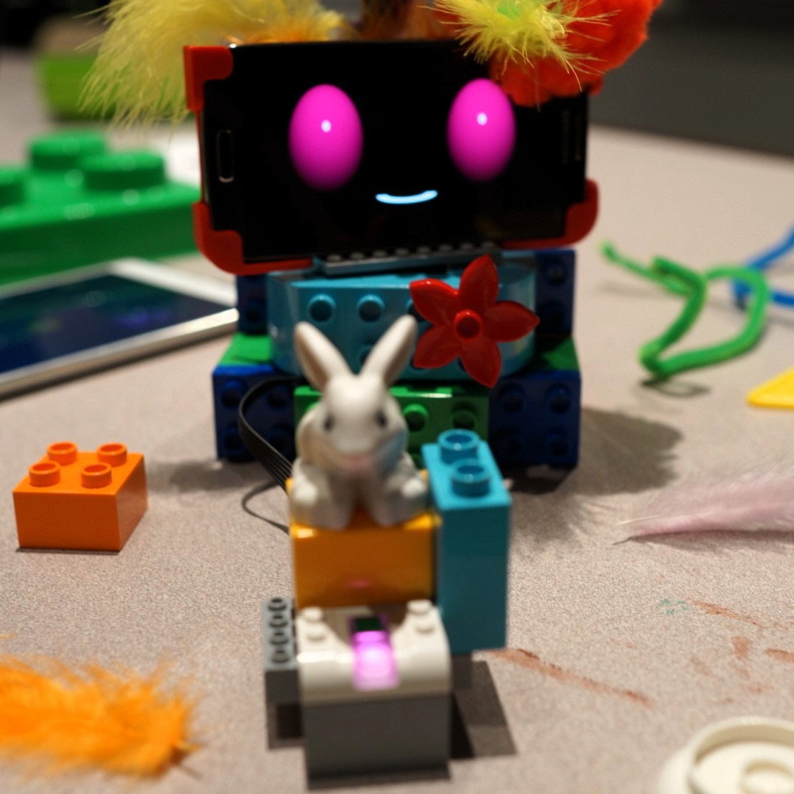
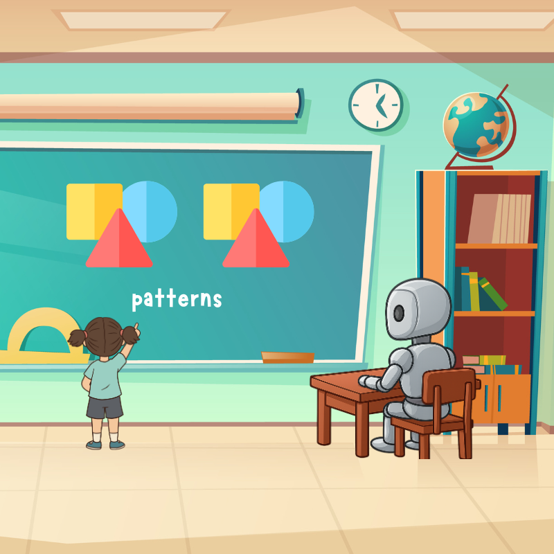
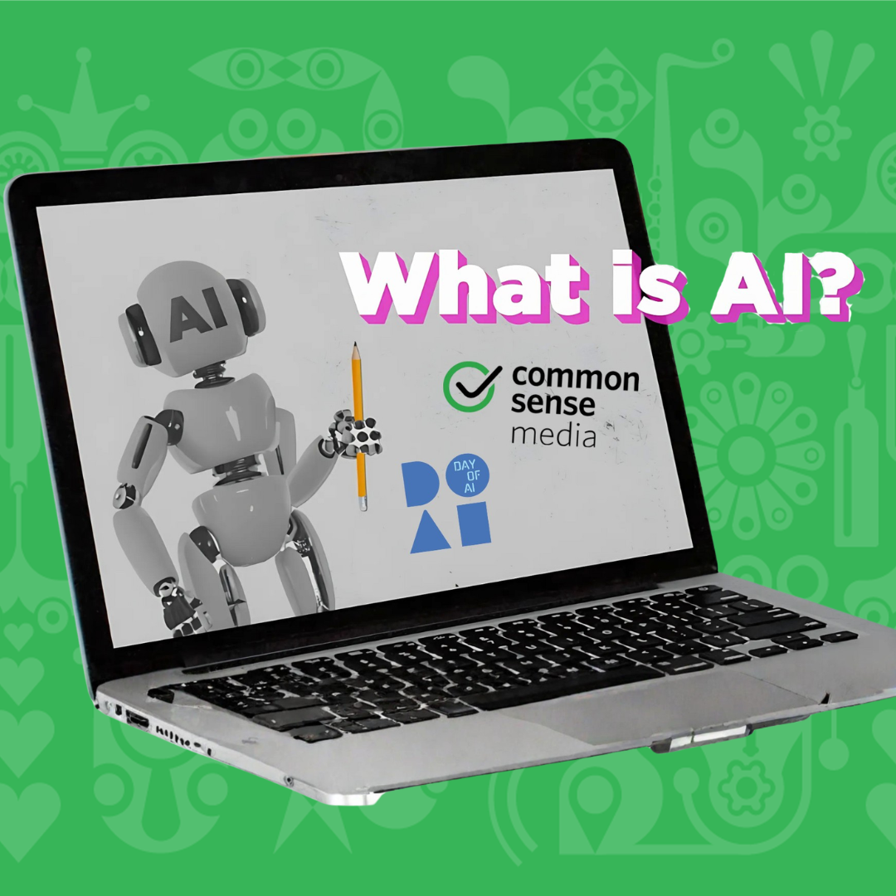

My passion lies in developing playful, purposeful, and inclusive computing experiences. Through platforms like Day of AI, I engineer tools and curricula that empower early learners and families to become active change-agents in our increasingly automated world.
featured work

Using Social Robots to Teach
AI in Preschool
Routledge
My chapter in Exploring the Potential of Artificial Intelligence in Early Childhood is on PopBots, a social robot that lets children ages 4–6 explore AI using a teachable companion.
MORE On POPBOTS

AI Foundations for Early Childhood
Day of AI
This introductory module designed to help young learners (ages 5–7) separate artificial machines from biological entities, exploring sensors, pattern matching, and predictive datasets.
EDUCATOR RESOURCES

Day of AI
Family AI Toolkit
Day of AI and Common Sense Media
This video series includes conversation-starting videos and at-homediscussion guides for caretakes with curious kids wanting to explore more about AI and how to use it safely and responsiby.
FAMILY RESOURCES